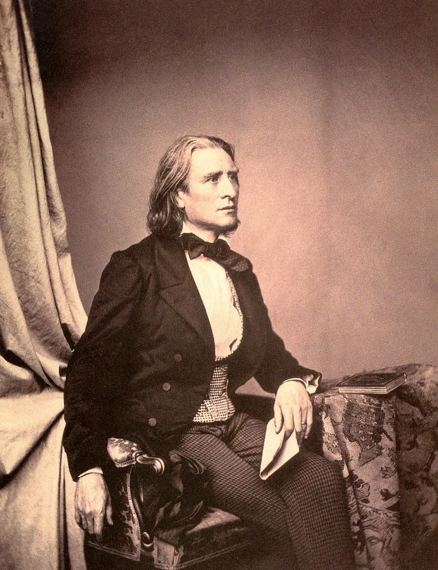
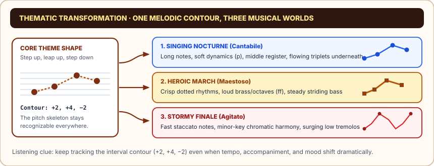

Music pioneer · Romantic · Composer arrangement studio
Franz Liszt
Listen to “La Campanella” ↗ Alice Sara Ott · Deutsche Grammophon
Choose a complete Liszt piano piece, then press Play in the score player. Follow the notes, slow the tempo, loop a passage, or isolate a staff. Start with No. 1 for chord balance; try No. 3 for a singing melody over flowing triplets, or No. 4 for hymn-like phrasing. These are original piano scores, not beginner arrangements. Playback uses sampled or synthesized instruments; consult the linked edition for fingering, pedaling, and expressive detail.
Arranging with care
A source staff is not always the melody: in an orchestral score, find the staff carrying the theme. A two-part piano study pairs your selected voice with a source bass; it is not a concert reduction and wide leaps may need redistribution. Saxophone notation is transposed while playback stays at concert pitch. Violin parts stay at concert pitch and are moved by octaves to sit above the open G string. Guitar tab preserves pitch and rhythm but may need a different octave or fingering. Original ensembles are available only where the source contains those parts. Piano reductions and original classroom studies retain their source identities.
Recordings: Nicholaus P. Brosowsky’s Tonejs-Instruments sample collection, CC BY 3.0; VSCO 2 Community Edition, CC0. Sample credits and processing.
Music pioneer · Romantic · 1811–1886
About Franz Liszt

Franz Liszt (1811–1886) was a Hungarian pianist, conductor, and composer who revolutionized keyboard technique and invented the solo recital. Across his piano works and symphonic poems, one recognizable theme returns in astonishing new guises.
Music pioneer · Romantic
Sound experiment: thematic transformation
Compare a short theme with the same pitches stretched into longer notes. Does it sound more like a declaration or a song?
This is an original classroom demonstration of a musical idea, not an excerpt or recording of the composer’s work.
Choose a version, then press Play.
Life and context
Franz Liszt (1811–1886).
A Hungarian composer and celebrated touring pianist, Liszt made the solo recital a major concert event. He later worked in Weimar as a conductor and composer, championing new orchestral music.
Franz Liszt: a timeline
- Born on 22 October in Doborján (Raiding), Kingdom of Hungary.
- Studies piano in Vienna with Carl Czerny and composition with Antonio Salieri.
- Hears violinist Niccolò Paganini in Paris and vows to achieve the same virtuosity on piano.
- Begins famous European concert tours and coins the modern solo “recital.”
- Settles in Weimar as court conductor, championing works by Berlioz, Schumann, and Wagner.
- Completes the Piano Sonata in B minor, built from a handful of transformed motifs.
- Publishes Les préludes, establishing the orchestral symphonic poem.
- Takes minor religious orders in Rome and focuses on sacred choral works and teaching.
- Dies in Bayreuth on 31 July after a final concert tour in England and Luxembourg.
Thematic transformation
A theme can keep its outline while its rhythm, register, and character change. Liszt used thematic transformation to connect contrasting sections, and developed the symphonic poem: orchestral music shaped by an idea, story, or image.

Guided listening
Choose a performance of one of these works. Listen once for its overall character, then again for the detail in the prompt.
- Les préludes: listen for recurring ideas taking on a new character.
- Piano Sonata in B minor: follow how a few musical ideas return across contrasting sections.
- Liebesträume No. 3: separate the singing melody from the flowing accompaniment.
Practice and reflection
For piano study, choose Original scoring. Listen to a short passage, loop it at a comfortable tempo, and practice each staff before combining them. Keep the melody louder than the accompaniment. Staff isolation follows the printed score; where the hands cross, check the linked edition with your teacher.
- Play both sound examples. Describe one feature that changes and one that stays the same.
- What would you change to turn a quiet theme into a triumphant one without losing its identity?
- Create a four-note idea at the piano. Make two versions using today’s musical idea, then explain your choices to a partner.
Check your listening
Compare a short theme with the same pitches stretched into longer notes. Does it sound more like a declaration or a song? A useful answer names a feature you can hear and explains its effect. More than one interpretation is possible.
Copy your notes before leaving this page; they are not saved.